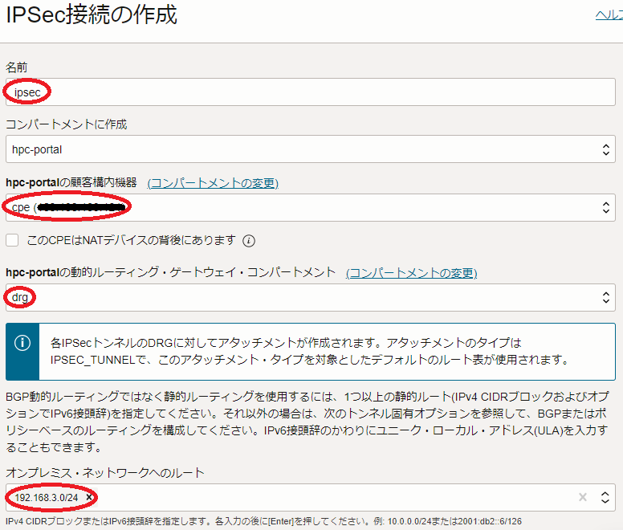
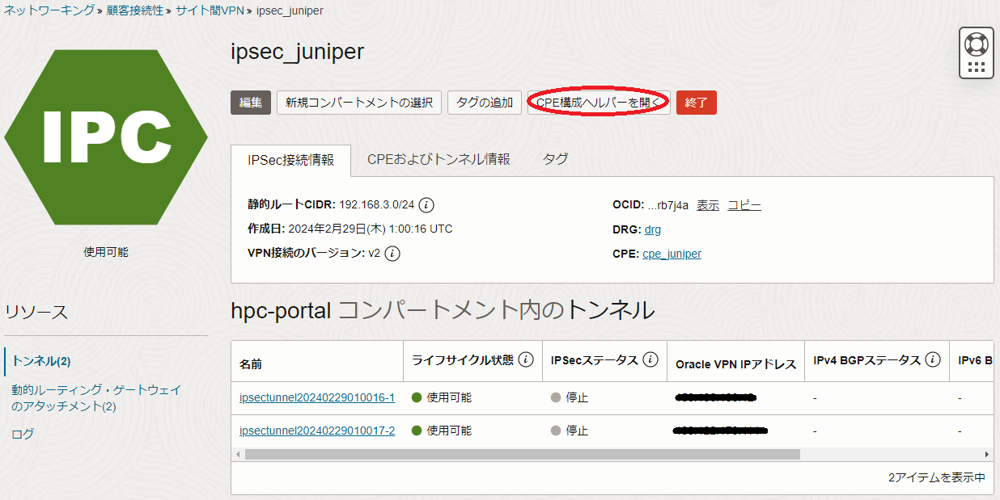

HPC/機械学習ワークロードをオンプレミスからOCIに移行する際、多くのケースでオンプレミスとOCIを拠点間接続する必要が生じます。
例えば、有償CAEアプリケーションのライセンスサーバがオンプレミス側に存在し、OCI側で稼働する計算ノードでこのライセンスサーバからライセンスを取得するケースです。
本テクニカルTipsは、 サイト間VPN を使用してIPSecのトンネルモードでオンプレミスとOCIを拠点間接続し、OCI側プライベートサブネットに接続する計算ノード相当のインスタンスとオンプレミス側プライベートサブネットに接続するライセンスサーバ相当のインスタンスの疎通を可能とするための手順を解説します。
注意 : 本コンテンツ内の画面ショットは、現在のOCIコンソール画面と異なっている場合があります。
0. 概要
サイト間VPN は、IPsecのトンネルモードでオンプレミスのネットワークとOCIの 仮想クラウド・ネットワーク をIP層で拠点間接続するため、以下のような利用形態をシームレスに実現することが可能です。
- OCIで稼働する計算ノードでオンプレミスのライセンスサーバから有償CAEアプリケーションのライセンスを取得する
- オンプレミスの端末からOCIで稼働するログインノードにログインしインタラクティブ処理を行う
- オンプレミスの端末からOCIで稼働するログインノードにシミュレーションに必要なファイルを転送する
- OCIで稼働するログインノードからシミュレーションの結果ファイルをオンプレミスの端末に転送する
また サイト間VPN は、サービス自体は無償のサービスでパブリックインターネットを拠点間接続回線に利用するため、OCIからオンプレミスに向けた転送データ量が少ないケースでは、他の有料専用線サービスと比較し、コスト効果の高い拠点間接続が可能です。
なお サイト間VPN を介する拠点間の通信帯域は、使用するインターネット接続回線に十分な性能がある場合、サービス自体の性能上限として250Mbps程度を期待することが出来ます。（詳細は、 ここ を参照ください。）このため、前述の利用形態 1. や 2. のケースに於いては、最もコストパフォーマンスの良い拠点間接続方法であると言えます。
ここでオンプレミス側のVPN接続機器は、どのように用意したらよいでしょうか。
これには、以下の選択肢があります。
- VPNアプライアンス製品（※1）を使用する
- サーバ上で動作するIPSec実装（※2）を使用する
※1） サイト間VPN サービスで検証された ここ に記載のVPNアプライアンスから選択します。
※2） サイト間VPN サービスで検証された Libreswan か strongSwan から選択します。
このため、オンプレミスで既に サイト間VPN サービスで検証されたVPNアプライアンス製品が稼働している場合は選択肢 1. を採用し、それ以外であれば選択肢 2. が有力な候補となります。
本テクニカルTipsは、VPN接続機器にサーバ上で動作する Libreswan を使用し、これをオンプレミスのネットワークに模したOCIの 仮想クラウド・ネットワーク （以降”左側サイト”と呼称）にデプロイ、左側サイトとは異なるリージョンにデプロイする 仮想クラウド・ネットワーク （以降”右側サイト”と呼称）を サイト間VPN で拠点間接続する手順を解説します。
このため、本テクニカルTipsの左側サイトに関連する構築手順をオンプレミスのネットワークと選択肢 1. で採用するVPN接続機器の該当する手順に置き換えることで、自身の環境に合わせたOCIとの拠点間接続構築手順に応用することが出来ます。
以下は、本テクニカルTipsで想定するシステム構成図です。

記載されるネットワークアドレス等は、自身の環境のものに読みかえてご利用ください。
また本テクニカルTipsは、拠点間が想定通り接続されていることを確認するため、左側サイトのプライベートネットワークに接続するライセンスサーバ相当のインスタンスと右側サイトのプライベートサブネットに接続する計算ノード相当のインスタンス間でpingとSSHによる疎通確認を行います。
次章以降では、以下の順に解説を進めます。
- 左側サイト用ネットワーク関連リソース作成
- 右側サイト用 仮想クラウド・ネットワーク と関連リソース作成
- Libreswan用インスタンスとその他インスタンスデプロイ
- Libreswan用インスタンスセットアップ
- 拠点間接続関連リソース作成
- Libreswan インストール・セットアップ
- ライセンスサーバ・計算ノード間疎通確認
なお、VPN接続機器にVPNアプライアンス製品を使用する場合は、手順 3. のLibreswan用インスタンスのデプロイと手順 4. をスキップし、手順 6. を自身のVPNアプライアンス製品の手順に置き換えて実施します。
このVPNアプライアンス製品の構成手順は、以下の情報が参考になります。
- CPE構成ヘルパー
VPNアプライアンス製品を構成するために必要な、手順 5. で作成したOCI関連リソース情報をOCIコンソールから収集するヘルパーツールです。利用方法は、 CPE構成ヘルパー利用方法 を参照してください。 - 各VPNアプライアンス製品毎に用意されているOCIドキュメント
ここ の該当するVPNアプライアンス製品の構成列とビデオ列の情報を参照してください。
1. 左側サイト用ネットワーク関連リソース作成
本章は、以下の左側サイト用ネットワーク関連リソースを作成します。
ここで本テクニカルTipsの左側サイトのネットワーク関連リソースは、右側サイトと同一テナンシーの異なるリージョンにデプロイする 仮想クラウド・ネットワーク と関連するリソースでこれを模しており、適宜オンプレミスのネットワークとこれを構成するネットワーク機器での手順に置き換えて作成して下さい。
- 仮想クラウド・ネットワーク （192.168.0.0/16）
- パブリックサブネット（192.168.1.0/24）
- プライベートサブネット（192.168.2.0/24）
- インターネット・ゲートウェイ
- パブリックサブネット用 ルート表
- プライベートサブネット用 ルート表
- パブリックサブネット用 セキュリティ・リスト
- プライベートサブネット用 セキュリティ・リスト
ルート表 に含める ルート・ルール は、下表のとおりです。
| 対象サブネット | Destination | Gateway | Purpose |
|---|---|---|---|
| パブリック | 0.0.0.0/0 | インターネット・ゲートウェイ | 右側サイトへのトラフィック |
| プライベート | 10.0.2.0/24 | 192.168.1.42 （※3） | 右側サイトプライベートサブネットへのトラフィック |
※3）Libreswan用インスタンスのパブリックサブネット接続プライベートIPアドレスです。3. Libreswan用インスタンスとその他インスタンスデプロイ を実施してIPアドレスを確定、 4. Libreswan用インスタンスセットアップ のステップ 1. を実施後、この ルート・ルール を作成します。
また セキュリティ・リスト は、下表のとおりです。
| 対象サブネット | Direction | Source/ Destination |
Protocol | Stateless | Purpose |
|---|---|---|---|---|---|
| パブリック | Ingress | 192.168.2.0/24 | All | No | 左側サイトプライベートサブネットからのアクセス |
| Egress | 0.0.0.0/0 | All | No （※4） |
左側サイトプライベートサブネットへのアクセス 右側サイトへのアクセス |
|
| プライベート | Ingress | 192.168.1.0/24 | ALL | No | 左側サイトパブリックサブネットからのアクセス |
| Ingress | 10.0.2.0/24 | All | No | 右側サイトプライベートサブネットからのアクセス | |
| Egress | 0.0.0.0/0 | All | No | 左側サイトパブリックサブネットへのアクセス 右側サイトプライベートサブネットへのサクセス |
※4）IPSec接続 作成時 Libreswan が ステートフル・エグレス ルールで右側サイトからのアクセスを受け入れるために必要です。
2. 右側サイト用仮想クラウド・ネットワークと関連リソース作成
本章は、以下の右側サイト用 仮想クラウド・ネットワーク と関連リソースを作成します。
- 仮想クラウド・ネットワーク （10.0.0.0/16）
- パブリックサブネット（10.0.1.0/24）
- プライベートサブネット（10.0.2.0/24）
- インターネット・ゲートウェイ
- NATゲートウェイ
- パブリックサブネット用 ルート表
- プライベートサブネット用 ルート表
- パブリックサブネット用 セキュリティ・リスト
- プライベートサブネット用 セキュリティ・リスト
ルート表 に含める ルート・ルール は、下表のとおりです。
| 対象サブネット | Destination | Gateway | Purpose |
|---|---|---|---|
| パブリック | 0.0.0.0/0 | インターネット・ゲートウェイ | インターネットへのトラフィック |
| プライベート | 0.0.0.0/0 | NATゲートウェイ | インターネットへのトラフィック |
| 192.168.2.0/24 | 動的ルーティング・ゲートウェイ （※5） |
左側サイトプライベートサブネットへのトラフィック |
※5）5. 拠点間接続関連リソース作成 のステップ 1. で 動的ルーティング・ゲートウェイ を作成後、この ルート・ルール を追加します。
また セキュリティ・リスト は、下表のとおりです。
| 対象サブネット | Direction | Source/ Destination |
Protocol | Stateless | Purpose |
|---|---|---|---|---|---|
| パブリック | Ingress | 10.0.2.0/24 | All | No | 右側サイトプライベートサブネットからのアクセス |
| Ingress | 0.0.0.0/0 | TCP:22 | No | インターネットからのSSHアクセス | |
| Egress | 0.0.0.0/0 | All | No | 右側サイトプライベートサブネットへのアクセス インターネットへのアクセス |
|
| プライベート | Ingress | 10.0.1.0/24 | ALL | No | 右側サイトパブリックサブネットからのアクセス |
| Ingress | 192.168.2.0/24 | All | No | 左側サイトプライベートサブネットからのアクセス | |
| Egress | 0.0.0.0/0 | All | No | 右側サイトパブリックサブネットへのアクセス 左側サイトプライベートサブネットへのサクセス |
これらのリソース作成方法は、 OCIチュートリアル の その2 - クラウドに仮想ネットワーク(VCN)を作る を参照ください。
3. Libreswan用インスタンスとその他インスタンスデプロイ
本章は、拠点間接続を実現・検証するために必要な下表の4インスタンスをデプロイします。
| インスタンス | 用途 | デプロイするサイト | 接続するサブネット | firewalld停止 |
|---|---|---|---|---|
| Libreswan | Libreswan稼働用 | 左側 | パブリック | 未適用 |
| lic-srv | オンプレミスライセンスサーバ相当 | 左側 | プライベート | 適用 |
| Bastion | Computeインスタンスへの踏み台 | 右側 | パブリック | 未適用 |
| Compute | 計算ノード相当 | 右側 | プライベート | 適用 |
本テクニカルTipsでは、これらのインスタンスにOSを Oracle Linux 8.9とする任意の 仮想マシン・インスタンス を使用します。
この際、後の疎通確認を行うため、表中に記載の該当するインスタンスでfirewalldサービスを停止します。
4. Libreswan用インスタンスセットアップ
本章は、Libreswan用インスタンスをVPN接続装置として機能させるために必要なセットアップ作業を行います。
具体的には、以下の手順を実施します。
- ソース/宛先チェックのスキップ（※6）
- パケット転送を許可するためのカーネルパラメータ設定追加
- 拠点間接続で接続する右側サイトのサブネットアドレスからのアクセスをfirewalldに許可
※6）デフォルトで許可されていない VNIC のパケット転送設定を変更し、これを許可します。
-
ソース/宛先チェックのスキップ
OCIコンソールにログインし、Libreswan用インスタンスの インスタンスの詳細 画面左側の アタッチされたVNIC メニューをクリックし、表示される以下 アタッチされたVNIC 画面の プライマリVNIC の VNICの編集 メニューをクリックします。
表示される以下 VNICの編集 サイドバーで、 ソース/宛先チェックのスキップ チェックボックスをチェックし、 変更の保存 ボタンをクリックします。
-
パケット転送を許可するためのカーネルパラメータ設定追加
Libreswan用インスタンスで /etc/sysctl.conf に以下の行を追加します。$ diff /etc/sysctl.conf_org /etc/sysctl.conf 13a14,24 > > net.ipv4.ip_forward = 1 > net.ipv4.conf.all.accept_redirects = 0 > net.ipv4.conf.all.send_redirects = 0 > net.ipv4.conf.default.send_redirects = 0 > net.ipv4.conf.ens3.send_redirects = 0 > net.ipv4.conf.default.accept_redirects = 0 > net.ipv4.conf.ens3.accept_redirects = 0 > net.ipv4.conf.all.rp_filter = 0 > net.ipv4.conf.default.rp_filter = 0 > net.ipv4.conf.ens3.rp_filter = 0 $Libreswan用インスタンスのopcユーザで以下コマンドを実行し、先の変更を有効化します。
$ sudo sysctl -p -
拠点間接続で接続する右側サイトのサブネットアドレスからのアクセスをfirewalldに許可
Libreswan用インスタンスのopcユーザで以下コマンドを実行し、拠点間接続で接続する右側サイトのサブネットアドレス（ここではプライベートサブネットの 10.0.2.0/24）からのアクセスをfirewalldに許可し、その設定を確認します。$ sudo firewall-cmd --permanent --add-service="ipsec" success $ sudo firewall-cmd --permanent --zone=trusted --add-source=10.0.2.0/24 success $ sudo firewall-cmd --reload success $ sudo firewall-cmd --zone=trusted --list-all trusted (active) target: ACCEPT icmp-block-inversion: no interfaces: sources: 10.0.2.0/24 services: ports: protocols: forward: no masquerade: no forward-ports: source-ports: icmp-blocks: rich rules: $
5. 拠点間接続関連リソース作成
本章は、以下の拠点間接続関連リソースを右側サイトに作成します。
- 動的ルーティング・ゲートウェイ
- 仮想クラウド・ネットワーク・アタッチメント
- 顧客構内機器 （CPE）
- IPSec接続
-
動的ルーティング・ゲートウェイ 作成
OCIコンソールにログインし、右側サイトをデプロイする リージョン を選択後、 ネットワーキング → 仮想クラウド・ネットワーク とメニューを辿り、表示される以下画面で 顧客接続性 メニューをクリックします。
表示される以下 顧客接続性 画面で、 動的ルーティング・ゲートウェイ メニューをクリックします。
表示される以下 動的ルーティング・ゲートウェイ 画面で、 動的ルーティング・ゲートウェイの作成 ボタンをクリックします。

表示される以下 動的ルーティング・ゲートウェイの作成 サイドバーで、 名前 フィールドに付与する名称を入力して 動的ルーティング・ゲートウェイの作成 ボタンをクリックします。
作成した 動的ルーティング・ゲートウェイ は、 2. 右側サイト用仮想クラウド・ネットワークと関連リソース作成 で作成したプライベートサブネット用 ルート表 のGatewayとし、この ルート・ルール を作成します。
-
仮想クラウド・ネットワーク・アタッチメント 作成
表示される以下 仮想クラウド・ネットワーク・アタッチメント フィールドで、 仮想クラウド・ネットワーク・アタッチメントの作成 ボタンをクリックします。
表示される以下 仮想クラウド・ネットワーク・アタッチメント作成 サイドバーで、 仮想クラウド・ネットワーク プルダウンメニューに先に作成した右側サイトの 仮想クラウド・ネットワーク を選択し、 仮想クラウド・ネットワーク・アタッチメントの作成 ボタンをクリックします。

-
顧客構内機器 作成
OCIコンソールにログインし、右側サイトをデプロイする リージョン を選択後、 ネットワーキング → 仮想クラウド・ネットワーク とメニューを辿り、表示される以下画面で 顧客接続性 メニューをクリックします。表示される以下 顧客接続性 画面で、 顧客構内機器 メニューをクリックします。

表示される以下 顧客構内機器 画面で、 CPEの作成 ボタンをクリックします。

表示される以下 CPEの作成 画面で、以下の情報を入力し CPEの作成 ボタンをクリックします。
なお、ここに記載のないフィールドは、デフォルトのままとします。- 名前 ：顧客構内機器 に付与する名前
- IPアドレス ：Libreswan用インスタンスに付与されたグローバルIPアドレス（※7）
- ベンダー ：Libreswan（※8）
- プラットフォームバージョン ：3.18 or later（※8）
※7）VPNアプライアンス製品を利用する場合は、VPN接続機器のグローバルIPアドレスを指定します。
※8）VPNアプライアンス製品を利用する場合は、利用する機器に合わせて選択します。
-
IPSec接続 作成
OCIコンソールにログインし、右側サイトをデプロイする リージョン を選択後、 ネットワーキング → 仮想クラウド・ネットワーク とメニューを辿り、表示される以下画面で 顧客接続性 メニューをクリックします。表示される以下 顧客接続性 画面で、 サイト間VPN メニューをクリックします。

表示される以下 サイト間VPN 画面で、 IPSec接続の作成 ボタンをクリックします。

表示される以下 IPSec接続の作成 サイドバーで、以下の情報を入力し IPSec接続の作成 ボタンをクリックします。
なお、ここに記載のないフィールドは、デフォルトのままとします。- 名前 ：IPSec接続 に付与する名前
- 顧客構内機器 ：先に作成した 顧客構内機器
- 動的ルーティング・ゲートウェイ ：先に作成した 動的ルーティング・ゲートウェイ
- オンプレミス・ネットワークへのルート ：192.168.2.0/24（※9）
- トンネル1 の ルーティング・タイプ ：静的ルーティング
- トンネル2 の ルーティング・タイプ ：静的ルーティング
※9）作成する IPSec接続 を介して通信する左側サイトのサブネット（ここではプライベートサブネットの 192.168.2.0/24）を指定します。


表示される以下画面の トンネル フィールドで、 名前 列の末尾が1と2になっているトンネル1とトンネル2が作成され、 ライフサイクル状態 列が何れも 使用可能 で IPSecステータス 列が何れも 停止 となることを確認します。
この IPSecステータス 列は、 6. Libreswanインストール・セットアップ の手順が完了すると、 稼働中 となります。
また、 Oracle VPN IPアドレス 列の各トンネルのグローバルIPアドレスを後の手順のために記録します。
前の画面の 名前 列のトンネル1をクリックし、表示される以下画面の トンネル情報 タブの 共有シークレット フィールドの 表示 ボタンをクリックし、表示されるトンネル1の共有シークレットを記録します。

また同様に、トンネル2の共有シークレットを記録します。
6. Libreswanインストール・セットアップ
本章は、Libreswan用インスタンスに Libreswan をインストール・セットアップし、IPSec接続を確立します。
-
Libreswan インストール
Libreswan用インスタンスのopcユーザで以下コマンドを実行し、 Libreswan をインストールします。$ sudo dnf install -y libreswan -
Libreswan 設定ファイル作成
Libreswan用インスタンスで、以下2個の Libreswan 設定ファイルを作成します。[/etc/ipsec.d/oci-ipsec.conf]
conn oracle-tunnel-1 left=192.168.1.42 leftid=CPE_global_IP right=Tunnel1_global_IP authby=secret leftsubnet=192.168.2.0/24 rightsubnet=10.0.2.0/24 auto=start mark=5/0xffffffff # Needs to be unique across all tunnels vti-interface=vti01 vti-routing=no ikev2=no # To use IKEv2, change to ikev2=insist ike=aes_cbc256-sha2_384;modp1536 phase2alg=aes_gcm256;modp1536 encapsulation=yes ikelifetime=28800s salifetime=3600s conn oracle-tunnel-2 left=192.168.1.42 leftid=CPE_global_IP right=Tunnel2_global_IP authby=secret leftsubnet=192.168.2.0/24 rightsubnet=10.0.2.0/24 auto=start mark=6/0xffffffff # Needs to be unique across all tunnels vti-interface=vti02 vti-routing=no ikev2=no # To use IKEv2, change to ikev2=insist ike=aes_cbc256-sha2_384;modp1536 phase2alg=aes_gcm256;modp1536 encapsulation=yes ikelifetime=28800s salifetime=3600s※10）下表のファイル中の主要な変数を参考に、自身の環境に合わせて修正します。
変数名 設定値 left Libreswan用インスタンスのパブリックサブネット接続用プライベートIPアドレス leftid Libreswan用インスタンスのパブリックIPアドレス right IPSec接続 の各トンネルに割り当てられたグローバルIPアドレス leftsubnet 拠点間接続で接続する左側サイトのサブネットアドレス rightsubnet 拠点間接続で接続する右側サイトのサブネットアドレス [/etc/ipsec.d/oci-ipsec.secrets]
CPE_global_IP Tunnel1_global_IP: PSK "Shared_secret_tunnel1" CPE_global_IP Tunnel2_global_IP: PSK "Shared_secret_tunnel1"※11）下表の各行・各列の設定項目を参考に、自身の環境に合わせて修正します。
1列目 2列目 3列目 1行目 Libreswan用インスタンスの
パブリックIPアドレスIPSec接続 のトンネル1に
割り当てられたグローバルIPアドレスIPSec接続 のトンネル1用共有シークレット 2行目 Libreswan用インスタンスの
パブリックIPアドレスIPSec接続 のトンネル2に
割り当てられたグローバルIPアドレスIPSec接続 のトンネル2用共有シークレット -
Systemdサービス設定ファイル修正
Libreswan をSystemdサービスに登録している設定ファイルを以下のように修正し、この修正を反映します。
なお、ここで追加している行に含まれるサブネットは、拠点間接続で左側サイトから通信したい右側サイトのサブネット（ここではプライベートサブネットの 10.0.2.0/24）を指定します。$ diff /usr/lib/systemd/system/ipsec.service_org /usr/lib/systemd/system/ipsec.service 33a34 > ExecStartPost=/bin/bash -c 'sleep 30; ip route add 10.0.2.0/24 nexthop dev vti01 nexthop dev vti02' 37a39 > ExecStopPost=/bin/bash -c 'ip route del 10.0.2.0/24' $ sudo systemctl daemon-reload -
Libreswan 起動・接続確認
Libreswan用インスタンスのopcユーザで以下コマンドを実行し、 Libreswan を起動、拠点間接続が確立されていることを確認します。$ sudo systemctl enable --now ipsec.service Created symlink /etc/systemd/system/multi-user.target.wants/ipsec.service → /usr/lib/systemd/system/ipsec.service. $ sudo ipsec verify Verifying installed system and configuration files Version check and ipsec on-path [OK] Libreswan 4.12 Checking for IPsec support in kernel [OK] NETKEY: Testing XFRM related proc values ICMP default/send_redirects [OK] ICMP default/accept_redirects [OK] XFRM larval drop [OK] Pluto ipsec.conf syntax [OK] Checking rp_filter [OK] Checking that pluto is running [OK] Pluto listening for IKE on udp 500 [OK] Pluto listening for IKE/NAT-T on udp 4500 [OK] Pluto ipsec.secret syntax [OK] Checking 'ip' command [OK] Checking 'iptables' command [OK] Checking 'prelink' command does not interfere with FIPS [OK] Checking for obsolete ipsec.conf options [OK] $ sudo ipsec status | grep active 000 Total IPsec connections: loaded 2, active 2 $また、 5. 拠点間接続関連リソース作成 のステップ 4. で確認した IPSecステータス 列が 稼働中 となっていることを確認します。
7. ライセンスサーバ・計算ノード間疎通確認
本章は、左側サイトのライセンスサーバに相当するインスタンスの lic-srv と右側サイトの計算ノードに相当するインスタンスの Compute を使用し、これらインスタンス間のpingとSSHによる疎通を確認、拠点間で通信可能であることを確認します。
-
ライセンスサーバ -> 計算ノード方向疎通確認
インスタンス lic-srv のopcユーザで以下コマンドを実行し、疎通を確認します。
ここでIPアドレスは、自身のインスタンス Compute のIPアドレスに置き換えて実行します。$ ping -c 1 10.0.2.74 PING 10.0.2.74 (10.0.2.74) 56(84) bytes of data. 64 bytes from 10.0.2.74: icmp_seq=1 ttl=60 time=163 ms --- 10.0.2.74 ping statistics --- 1 packets transmitted, 1 received, 0% packet loss, time 0ms rtt min/avg/max/mdev = 163.047/163.047/163.047/0.000 ms $ ssh 10.0.2.74 hostname compute $ -
計算ノード -> ライセンスサーバ方向疎通確認
インスタンス Compute のopcユーザで以下コマンドを実行し、疎通を確認します。
ここでIPアドレスは、自身のインスタンス lic-srv のIPアドレスに置き換えて実行します。$ ping -c 1 192.168.2.124 PING 192.168.2.124 (192.168.2.124) 56(84) bytes of data. 64 bytes from 192.168.2.124: icmp_seq=1 ttl=61 time=168 ms --- 192.168.2.124 ping statistics --- 1 packets transmitted, 1 received, 0% packet loss, time 0ms rtt min/avg/max/mdev = 168.001/168.001/168.001/0.000 ms $ ssh 192.168.2.124 hostname lic-srv $
参考情報
CPE構成ヘルパー利用方法
本章は、VPNアプライアンス製品を構成するために必要なOCIリソース情報をOCIコンソールから収集する、 CPE構成ヘルパー の利用方法を解説します。
ここでは、 5. 拠点間接続関連リソース作成 のステップ 3. で作成する 顧客構内機器 が以下の場合を例に記載します。
- ベンダー： Juniper
- プラットフォーム/バージョン: MX Series - JunOS 15.1 or later
-
CPE構成ヘルパー の起動
OCIコンソールにログインし、右側サイトをデプロイする リージョン を選択後、 ネットワーキング → 仮想クラウド・ネットワーク とメニューを辿り、表示される以下画面で 顧客接続性 メニューをクリックします。表示される以下 顧客接続性 画面で、 サイト間VPN メニューをクリックします。
表示される以下 サイト間VPN 画面で、 5. 拠点間接続関連リソース作成 のステップ 4. で作成した IPSec接続 をクリックします。
表示される以下画面で、 CPU構成ヘルパーを開く ボタンをクリックします。

-
構成情報の取得
表示される以下 CPE構成ヘルパー サイドバーで、 コンテンツの作成 ボタンをクリックします。表示される以下 CPE構成ヘルパー サイドバーで、 構成のダウンロード ボタンをクリックし、構成情報が記載されたテキストファイルをダウンロードします。